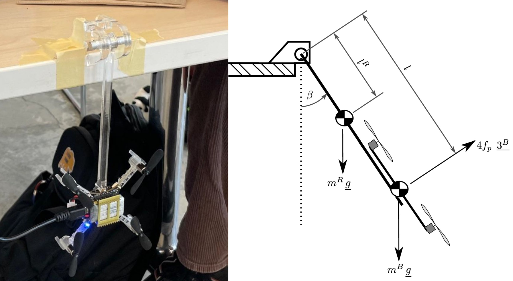
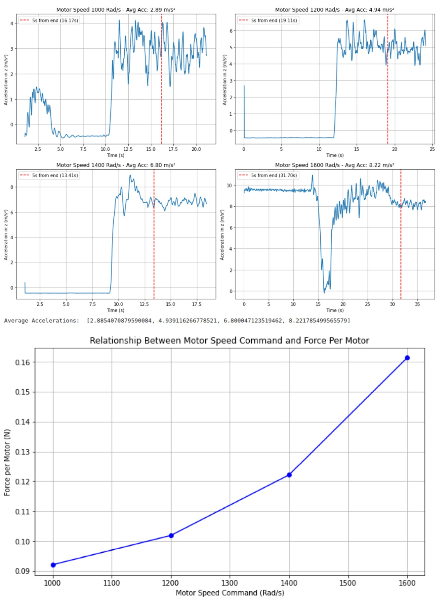
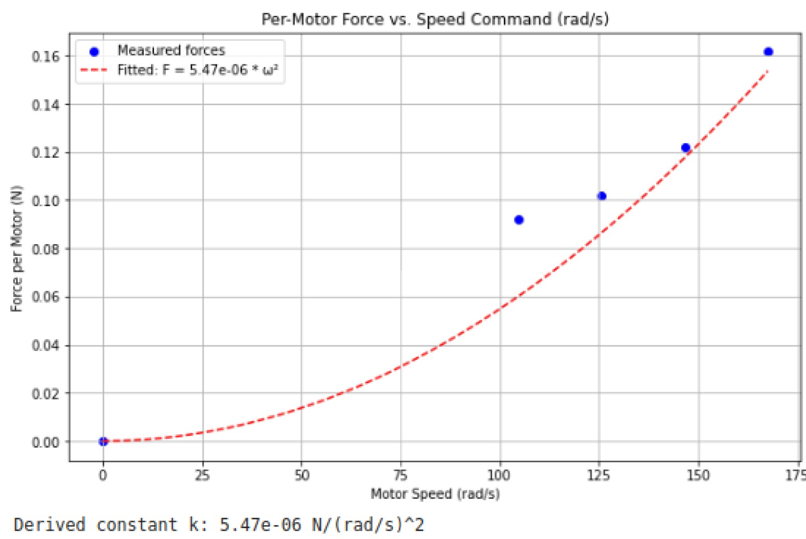
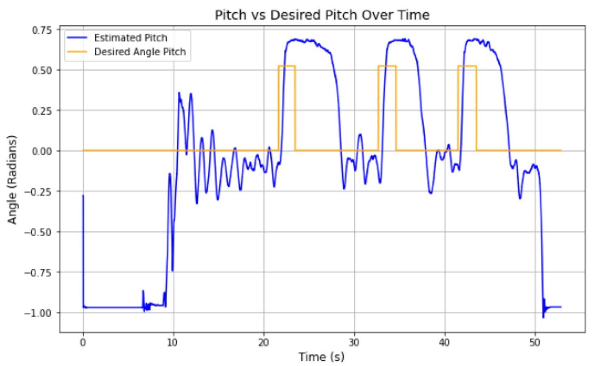
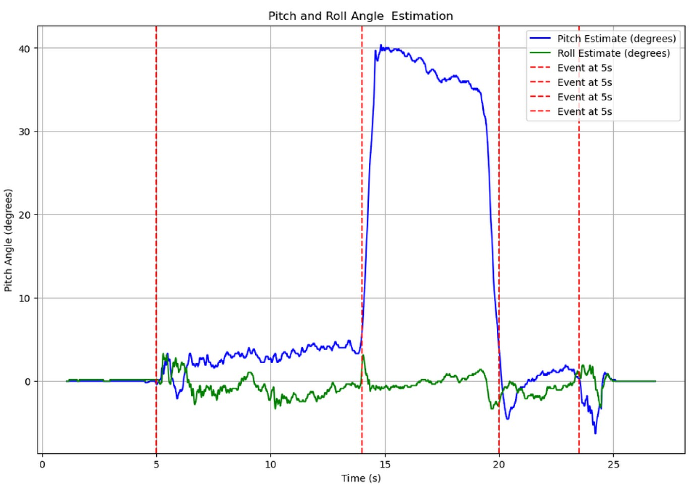
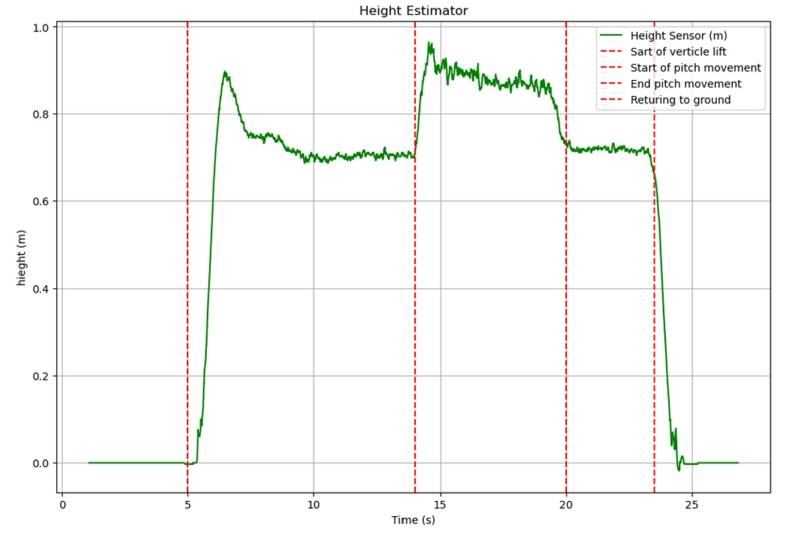
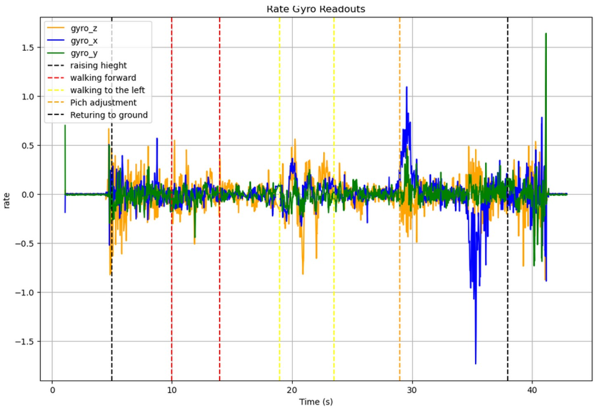
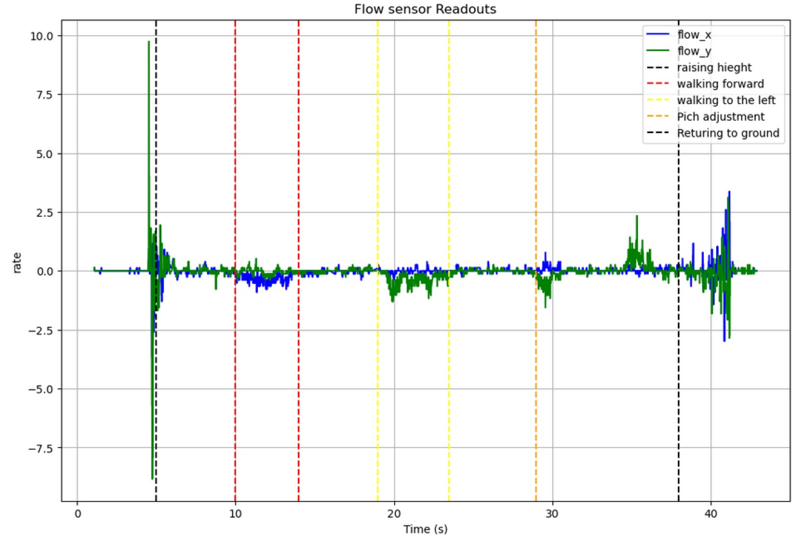
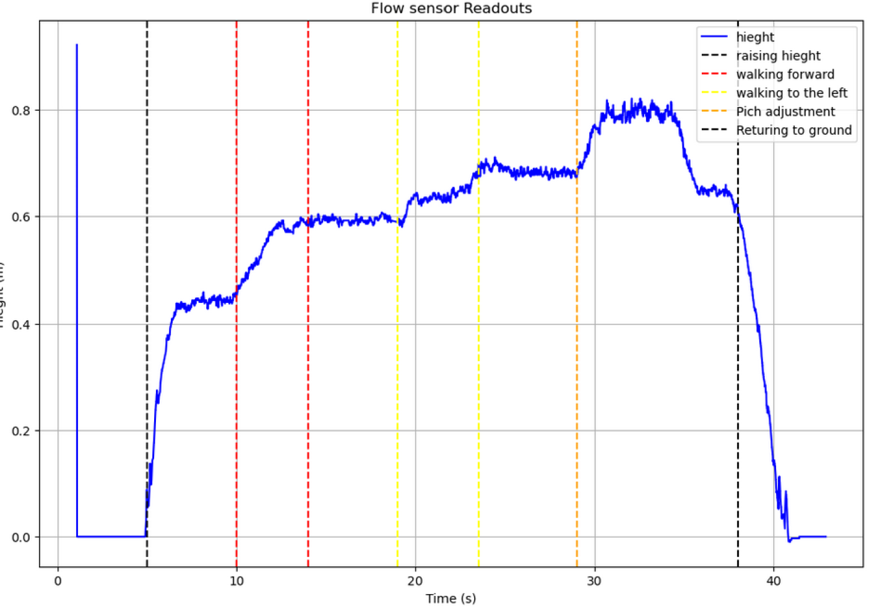
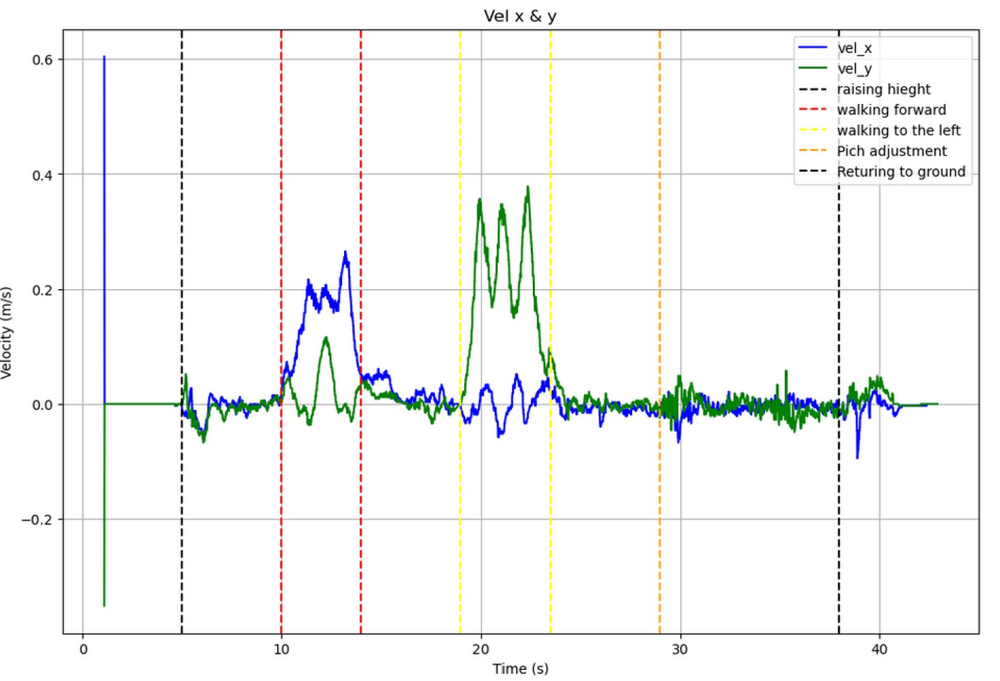

Design
Wheel Redesign
The previous wheel was a 3-piece Aluminum wheel held together with multiple fasteners, while this project attempts to create a hollowed out
version of the wheel with only 2 pieces: an Aluminum insert and the hollow carbon fiber wheel. The new design incorporates 4 hollowed spokes,
eliminating the aluminum wheel's crossing spokes, while maintaining an overall similar outer geometry to be compatible with existing components.

Aluminum insert design

The wheels need to be fastened using standard lug-nuts, which exert a compressive force on the face of the insert.
The material choice was 6061 Aluminum as it’s a lightweight metal with isotropic properties and is better suited for handling compressive loads.
A more lightweight material could be used, but as its 2nd moment of area about the rotational axis is fairly small, reducing its weight is not as
critical as the remainder of the wheel.
We planned to bond this insert to the carbon fiber wheel with the structural epoxy DP460NS.
Shown below is the overlap shear test results from the manufacturer’s datasheet using ASTM D 1002-72 Standard

As shown, the aluminum in an etched condition fails at 4500 PSI whereas a FRP(Fiber Reinforced Polymer)
with IPA-wipe surface preparation fails between 570 and 800 PSI. This indicates that the adhesive is most
likely to fail adhesively to the Carbon Fiber. With a conservative diameter of 3.2 inches, a torque load-case
of 1636.8 in-lbf, and a total glue-bond area of about 8.67 in^2, we can calculate the theoretical stress applied to the bond.
$$
\begin{aligned}
F_{applied} &= \frac{Torque}{Reaction\ Arm\ Radius}
= \frac{1636.8\ in\!-\!lbf}{1.6\ in}
= 1023\ lbf \\[10pt]
\sigma_{glue\ bond\ area} &= \frac{F_{applied}}{Effective\ Area}
= \frac{1023\ lbf}{8.67\ in^2}
= 118\ psi \\[10pt]
\end{aligned}
$$
Utilizing the minimum FRP strength values, the factor of safety was calculated
$$
begin{aligned}
FOS &= \frac{Material\ Strength}{Expected\ Stress}
= \frac{570\ psi}{118\ psi}
= 4.83
\end{aligned}
$$
This is driven mostly by the large glue-bond area and reaction arm radius.
Motor System Identification
To control the quadcopter, We experimentally derived the relationship between
PWM command, motor speed, and thrust. Using a tachometer and multiple
command inputs, We obtained a linear relationship between PWM and motor speed:
PWM = a + b · ω
a = -106
b = 0.18

We then derived the force produced by each motor using a one-axis test rig.
The angle of the rig was calculated from the accelerometer:
θ = arcsin(a_z / g)
F_motor = (9.81 m_R l_R + 9.81 m_B l) / (4 sin(θ) l)


We derived the constant that related the per-motor measured force (in N) and the speed command (in rad=s).
We validated this after removing UAV from rig. We tested the constant at 95% of the drones weight,
and it seemed as though the drone was very close to taking off, so the result seemed accurate.

Mixer Equations
After identifying the motor model, We implemented the mixer that converts
desired thrust and torques into individual motor commands. The mixer
matrix relates total thrust and roll/pitch/yaw torques to the four motors:
[ T ] [ 1 1 1 1 ] [ F1 ]
[ τx ] = [ 0 L 0 -L ] [ F2 ]
[ τy ] [ -L 0 L 0 ] [ F3 ]
[ τz ] [ k -k k -k ] [ F4 ]
This allowed the controller to command roll, pitch, and yaw independently
while maintaining stable thrust.

Attitude Estimation
We implemented an attitude estimator using gyroscope and accelerometer
measurements. The gyroscope provided accurate short-term motion, while
the accelerometer corrected long-term drift using a complementary filter.

Experimental testing at ~35° tilt showed that pitch and roll converged
consistently across multiple trials, while yaw drifted over time due to
the lack of an absolute reference.
Controller Testing
After building the estimator, We tuned the closed-loop controller using
step-response testing and instability experiments. We tested both stable
and intentionally unstable controllers to understand how gain selection
affected oscillations and response time.


Height Estimation
We also implemented and tested a height estimator using distance sensor
measurements combined with IMU data. The estimator was validated by
lifting the quadcopter to a known height (~0.5 m), holding it steady,
and returning it to the ground while recording the estimated height.


Horizontal Estimation
We then verified the horizontal estimator's performance.



